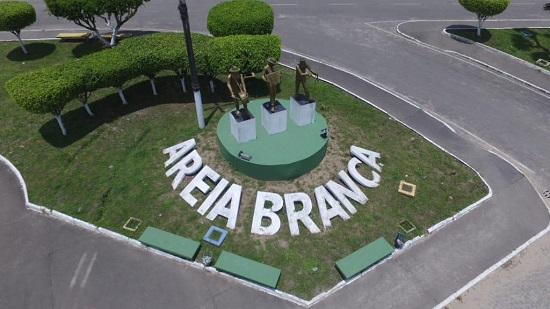

Areia Branca
História
Areia Branca, distante 36 quilômetros da capital, está entre os municípios mais novos do Estado. Seu nome nasceu literalmente da cor do solo existente na povoação, indicando a provável existência de praia em tempos remotos naquela área. Muito tempo levou para formar-se o povoado, que passou a ter registro na história como município no dia 11 de novembro de 1963, quando foi emancipado de Riachuelo.
A pacata e desconhecida cidade, situada ao pé da Serra de Itabaiana, passou a ser conhecida com a criação do forródromo, onde passou a ser realizado um dos mais animados festejos juninos do Brasil, consolidado como o ‘São João de Paz e Amor. Parte das terras que compõem o município de Areia Branca foram doadas pelo latifundiário José Ferreira Neto. Ele vendeu uma área e distribuiu outra, onde ficava uma lagoa seca, com pessoas carentes. Foi nesse lugar que o povoado começou a crescer, e hoje encontra-se um conjunto habitacional.
Juviniano Freire de Oliveira e Virgílio Rodrigues do Nascimento entram para a história como os principais fundadores domunicípio. A povoação teve início no quadrado em frente à capela que se transformou depois na Igreja Matriz São João Batista, nome do padroeiro dos areiabranquenses.
Mas só em 7 de setembro de 1965 houve a primeira eleição, sendo escolhido prefeito José Edgar de Andrade, morto em 2001. Depois dele, o município foi administrado por José Francisco de Almeida, que deu continuidade ao serviço de calçamento iniciado pelo primeiro prefeito.
fonte: https://cidades.ibge.gov.br/brasil/se/areia-branca/historicoPontos Turísticos
Ponta do Mel
Agora você tem como explorar as belezes de Ponta do Mel!!! A novidade é que a Farol da Costa Passeios e Turismo leva você a se aventurar pelo paraíso Ponta do Mel dispõe. Está esperando o que? Fale conosco e agende já a sua experiência!!!
Dados Gerais de acordo com o IBGE
| Prefeito (a) | Alan Andrelino Nunes Santos |
| Vice-Prefeito (a) | Hugo Oliveira Lima |
| Site do município | https://areiabranca.rn.gov.br/ |
| Área territorial | 148,134 km² |
| População estimada | 18.825 pessoas |
| Densidade demográfica | 114,93 hab/km² |
| IDHM | 0,579 |
| PIB per capita | R$ 11.918,21 |